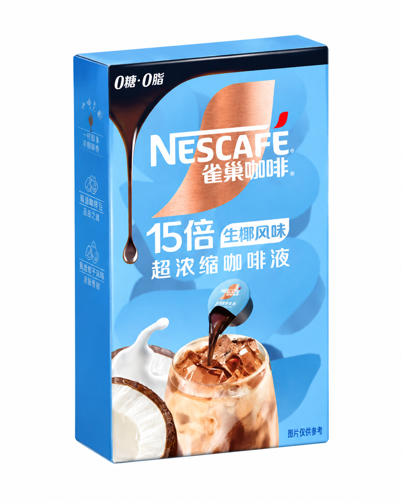
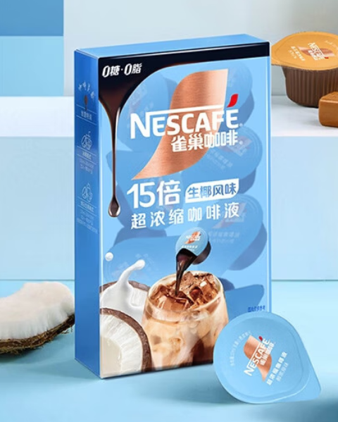

最终主图
蓝白色调建立清爽、直接的电商视觉。包装、胶囊和饮用场景共同说明产品形态，标题与底部信息条负责快速传达主要卖点。
品牌包装与产品信息仅用于视觉概念练习；页面不主张真实产品功效或官方合作。
产品资产与场景


项目汇总
项目没有单独制作作品集长图，因此以网页中的原图并置完成总结，保留每张图片的真实比例。

蓝白色调建立清爽、直接的电商视觉。包装、胶囊和饮用场景共同说明产品形态，标题与底部信息条负责快速传达主要卖点。


项目没有单独制作作品集长图，因此以网页中的原图并置完成总结，保留每张图片的真实比例。